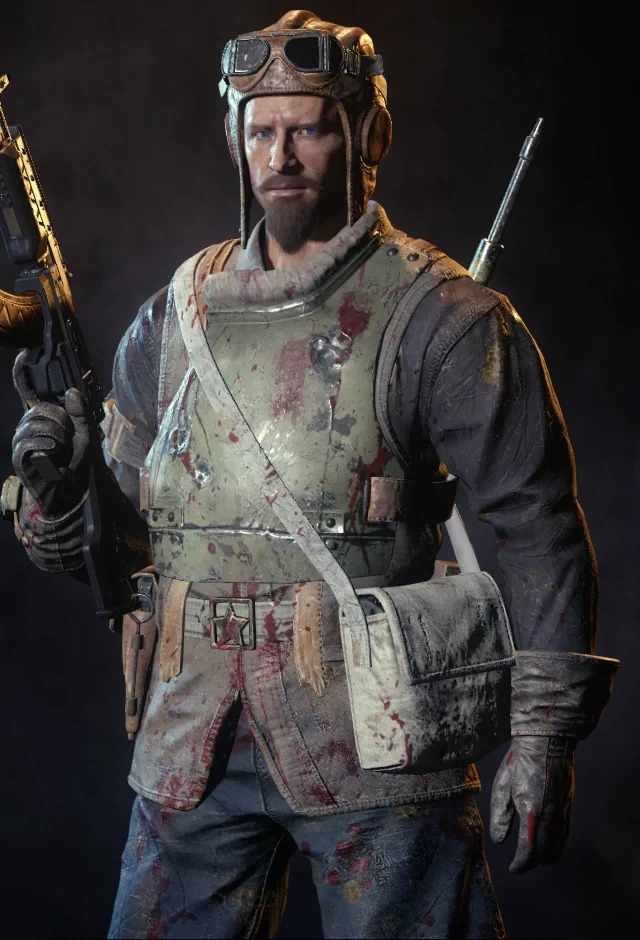

El sargento Nikolai Belinski (en ruso: Николай Белинский) fue un soldado soviético que luchó que luchó en la Segunda Guerra Mundial formando parte del Ejército Rojo y es un personaje principal jugable en el modo Zombies. El color de su indicador de jugador es azul (compartido con Robert McNamara y Robert Englund) pero está es de color verde en el mapa Moon y todos los mapas posteriores.